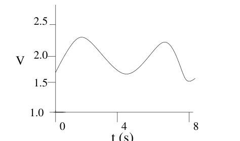
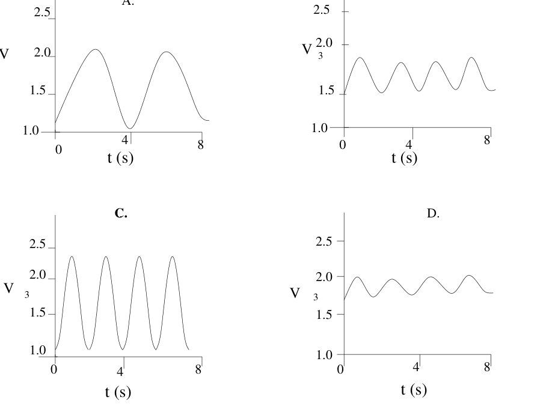
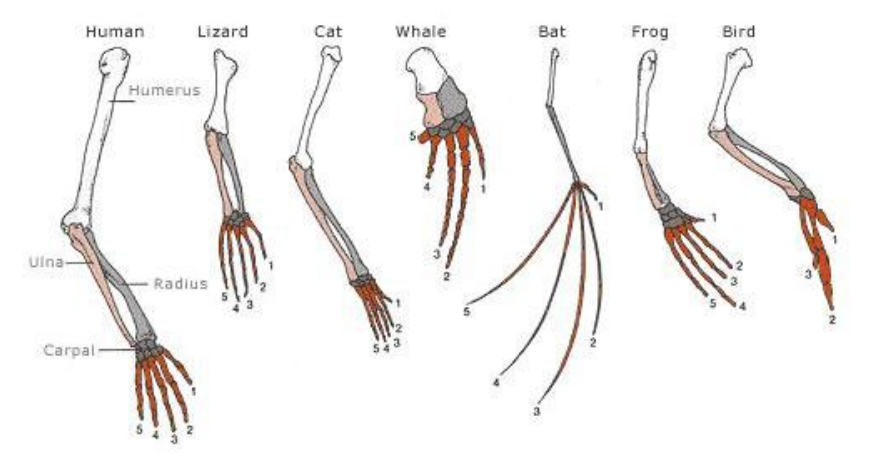
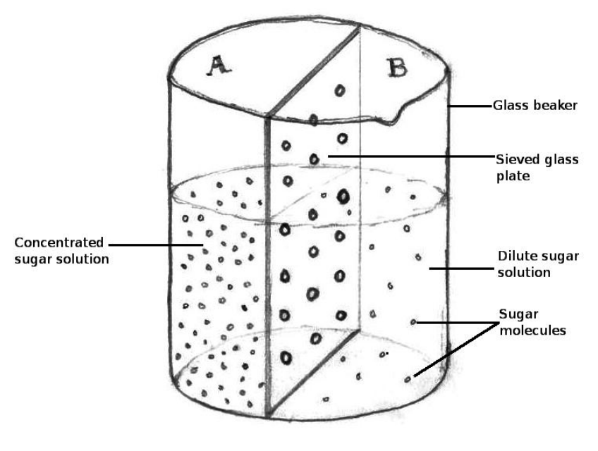
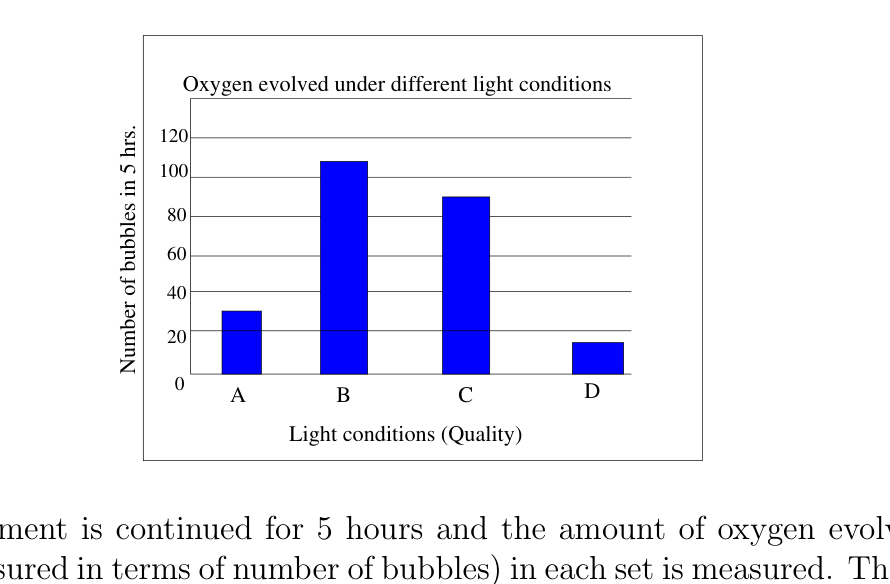
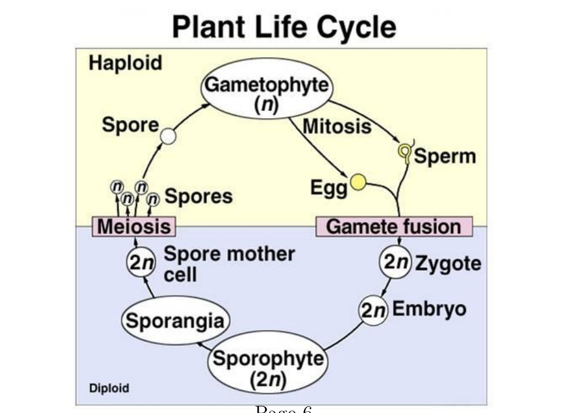
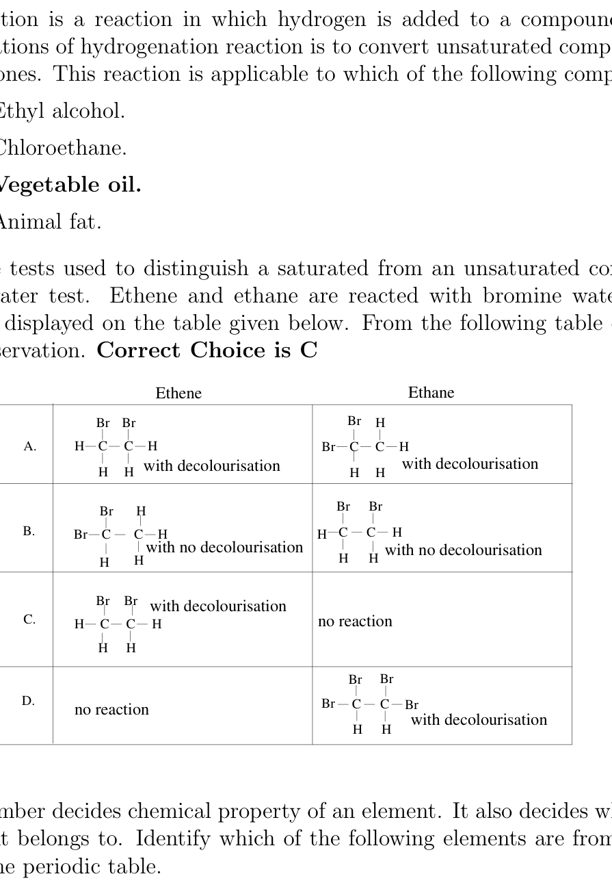
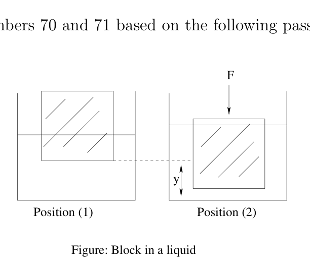
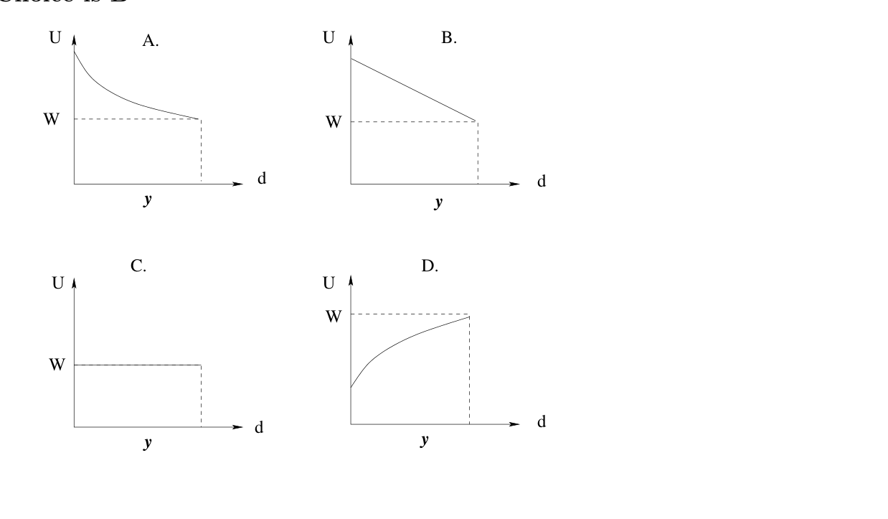

Which of the following ecosystems will exhibit maximum fixation of carbon averaged over a year through photosynthesis?
- (a) Farm ecosystem.
- (b) Ocean ecosystem.
- (c) Rainforest ecosystem.
- (d) Pond ecosystem.
Topic: Biology Metodi: Physical Modeling Competenze: Physical Reasoning Objects: — Fonte: Testo (PDF) — p.3
Quale dei seguenti ecosistemi mostrerà la massima fissazione del carbonio in media per un anno attraverso la fotosintesi?
- (a) ecosistema agricolo.
- (b) ecosistema oceanico.
- (c) ecosistema delle foreste pluviali.
- (d) ecosistema dei laghi.
Topic: Biology Metodi: Physical Modeling Competenze: Physical Reasoning Objects: — Fonte: Testo (PDF) — p.3
The human blood pigment Haemoglobin has maximum affinity towards
- (a)
- (b) CO
- (c)
- (d)
Topic: Biology Metodi: Physical Modeling Competenze: Physical Reasoning Objects: — Fonte: Testo (PDF) — p.3
L’ emoglobina ha una massima affinità con il
- (a)
- (b) CO
- (c)
- (d)
Topic: Biology Metodi: Physical Modeling Competenze: Physical Reasoning Objects: — Fonte: Testo (PDF) — p.3
Which of the following is a common character shown by both bryophytes and pteridophytes?
- (a) Semi-parasitic gametophytic stage.
- (b) Presence of vascular tissues.
- (c) Independent gametophytic and sporophytic generations.
- (d) Water is essential for fertilization.
Topic: Biology Metodi: Physical Modeling Competenze: Physical Reasoning Objects: — Fonte: Testo (PDF) — p.3
Quale dei seguenti è un carattere comune mostrato sia dai bryofiti che dai pteridofiti?
- a) Fase gametofetica semiparasitaria.
- (b) Presenza di tessuti vascolari.
- (c) generazioni gametofitiche e sporofitiche indipendenti.
- d) L’acqua è essenziale per la fecondazione.
Topic: Biology Metodi: Physical Modeling Competenze: Physical Reasoning Objects: — Fonte: Testo (PDF) — p.3
Consider the following ecological pyramids
I. Pyramid of numbers. II. Pyramid of biomass. III. Pyramid of energy.
The one(s) which is / are always upright are
- (a) I only.
- (b) II and III only.
- (c) III only.
- (d) I and II only.
Topic: Biology Metodi: Physical Modeling Competenze: Diagrammatic Reasoning Objects: — Fonte: Testo (PDF) — p.3
Considerate le seguenti piramidi ecologiche:
I. Piramide dei numeri. II. Piramide di biomassa. III. Il Piramide di energia.
Gli uno (s) che sono sempre verticali sono
- Solo io.
- b) Solo II e III.
- c) Solo III.
- (d) I e II solo.
Topic: Biology Metodi: Physical Modeling Competenze: Diagrammatic Reasoning Objects: — Fonte: Testo (PDF) — p.3
Respiratory quotient (R.Q.) is defined as the ratio of volume of evolved to the volume of taken in during the respiration process. Value of R.Q. depends on the nature of respiratory substrate and to the extent to which this substance is broken down into simpler products. Which of the following situation will give us the R.Q. value as infinity?
- (a) Fats used as substrate under aerobic conditions.
- (b) Organic acid is used as a substrate under aerobic conditions.
- (c) Any type of substrate used under anaerobic conditions.
- (d) Any type of substrate used under aerobic conditions.
Topic: Biology Metodi: Physical Modeling Competenze: Physical Reasoning Objects: — Fonte: Testo (PDF) — p.3
Il quotiente respiratorio (R.Q.) è definito come il rapporto tra il volume di evoluto e il volume di assorbito durante il processo di respirazione. Valore del R.Q. Dipende dalla natura del substrato respiratorio e dalla misura in cui tale sostanza viene suddivisa in prodotti più semplici. Quale delle seguenti situazioni ci darà la R.Q. valore come infinito?
- a) Grassi utilizzati come substratto in condizioni aerobiche.
- (b) L’acido organico è utilizzato come substratto in condizioni aerobiche.
- (c) Qualsiasi tipo di substratto utilizzato in condizioni anaerobiche.
- (d) Qualsiasi tipo di substratto utilizzato in condizioni aerobiche.
Topic: Biology Metodi: Physical Modeling Competenze: Physical Reasoning Objects: — Fonte: Testo (PDF) — p.3
The following graph depicts the rate and extent of a person’s breathing just before exercise.
Quesito 6

Here is the volume of air in lungs in and is the time in seconds.
Which of the following graph best depicts the rate and extent of breathing of the same person immediately after a period of exercise?
Quesito 6

Topic: Biology Metodi: Physical Modeling Competenze: Diagrammatic Reasoning Objects: — Fonte: Testo (PDF) — p.4
Il seguente grafico mostra la velocità e la portata della respirazione di una persona poco prima dell’esercizio fisico.
Quesito 6
Qui è il volume di aria nei polmoni in e è il tempo in secondi.
Quale dei seguenti grafici rappresenta meglio la velocità e la portata di respirazione della stessa persona immediatamente dopo un periodo di esercizio?
Quesito 6
Topic: Biology Metodi: Physical Modeling Competenze: Diagrammatic Reasoning Objects: — Fonte: Testo (PDF) — p.4
The following picture depicts the internal arrangement (anatomy) of bone structures in the limbs of different organisms. Which of the following statement is the most valid inference that can be drawn from a careful analysis of the limbs of different organisms in the diagram below?
Quesito 7

- (a) Bones of limbs of all the organisms have similar basic plan therefore may have common ancestor.
- (b) Bones of limbs of all the organisms have the same basic structure but different shapes, therefore bone expression is controlled only by the environmental factor.
- (c) Bones of limbs of all the organisms do not have similar bone structure therefore they may have evolved differently.
- (d) Systematic increase in the number of digits (fingers) exemplify use and disuse of organs.
Topic: Biology Metodi: Physical Modeling Competenze: Diagrammatic Reasoning Objects: — Fonte: Testo (PDF) — p.4
La seguente immagine raffigura l’organizzazione interna (anatomia) delle strutture ossee negli arti di diversi organismi. Quale delle seguenti affermazioni è la più valida inferenza **** che può essere tratta da un’attenta analisi degli arti di diversi organismi nel diagramma di seguito?
Quesito 7
- a) Le ossa degli arti di tutti gli organismi hanno un piano di base simile e possono quindi avere un antenato comune.
- b) Le ossa degli arti di tutti gli organismi hanno la stessa struttura di base ma forme diverse, quindi l’espressione ossea è controllata solo dal fattore ambientale.
- (c) Le ossa degli arti di tutti gli organismi non hanno una struttura ossea simile e possono essere diverse.
- (d) L’aumento sistematico del numero di dita (detta dita) esemplifica l’uso e il disuso di organi.
Topic: Biology Metodi: Physical Modeling Competenze: Diagrammatic Reasoning Objects: — Fonte: Testo (PDF) — p.4
Consider a beaker with a partition made up of sieved glass plate such that the beaker now contains two spaces - ‘A’ and ‘B’. The beaker contains distilled water to which sugar was added in space A.
Quesito 8

As you can see in the image, some molecules of sugar have moved to the region B. Which of the following is the correct term for describing this process?
- (a) Osmosis.
- (b) Diffusion.
- (c) Plasmolysis.
- (d) Imbibition.
Topic: Biology Metodi: Physical Modeling Competenze: Physical Reasoning Objects: — Fonte: Testo (PDF) — p.5
Considerate un bicchiere con una partizione di piastra di vetro setacciata in modo tale che il bicchiere contenga ora due spazi: “A” e “B”. Il bicchiere contiene acqua distillata alla quale è stato aggiunto zucchero nello spazio A.
Quesito 8
Come si vede nell’immagine, alcune molecole di zucchero si sono spostate nella regione B. Quale dei seguenti termini è corretto per descrivere questo processo?
- a) Osmosi.
- (b) Diffusione.
- (c) Plasmolisi.
- (d) Imbibizione.
Topic: Biology Metodi: Physical Modeling Competenze: Physical Reasoning Objects: — Fonte: Testo (PDF) — p.5
Hydrilla spp., an aquatic plant is immersed in water in a beaker. A funnel is kept inverted on it. A test tube filled with water is inverted on the nozzle of the funnel. Four such sets are prepared and each of them is exposed to different wavelengths of light, which were as follows:
Set I: Yellow light Set II: Blue light Set III: Red light Set IV: Green light
Quesito 9

The experiment is continued for 5 hours and the amount of oxygen evolved by the plant (measured in terms of number of bubbles) in each set is measured. The following graph is obtained from the data which details different quantities of oxygen evolved when exposed to different quality of light A, B, C and D.
Which of the following combinations match correctly with the data represented in the graph?
- (a) A - Red, B - Green, C - Blue and D - Yellow.
- (b) A - Green, B - Yellow, C - Red and D Blue.
- (c) A - Blue, B - Red, C - Yellow and D - Green.
- (d) A - Yellow, B - Red, C - Blue and D- Green.
Topic: Biology Metodi: Experimental Data Analysis Competenze: Experimental Data Analysis Objects: — Fonte: Testo (PDF) — p.5
Hydrilla spp., una pianta acquatica immersa in acqua in una coppa. Un funnel è tenuto invertito su di esso. Un tubo di prova riempito di acqua viene invertito sul becco del funile. Sono preparati quattro gruppi di luce di questo tipo, ognuno dei quali è esposto a lunghezze d’onda diverse, che sono le seguenti:
Set I: luce gialla Set II: luce blu Set III: Luce rossa Set IV: Luce verde
Quesito 9
L’esperimento è proseguito per 5 ore e viene misurata la quantità di ossigeno evoluta dalla pianta (misurata in termini di numero di bolle) in ogni set. La seguente grafica è ottenuta dai dati che dettagliano le diverse quantità di ossigeno evoluti quando esposti a diverse qualità di luce A, B, C e D.
Quale delle seguenti combinazioni corrisponde correttamente ai dati rappresentati nel grafico?
- a) A - rosso, B - verde, C - blu e D - giallo.
- b) A - Verde, B - Giallo, C - Rosso e D Blu.
- c) A - Blu, B - Rosso, C - Giallo e D - Verde.
- d) A - Giallo, B - Rosso, C - Blu e D - Verde.
Topic: Biology Metodi: Experimental Data Analysis Competenze: Experimental Data Analysis Objects: — Fonte: Testo (PDF) — p.5
Monozygotic twins have
- (a) same genetic make up and different biological sex.
- (b) same genetic make up and same biological sex.
- (c) dissimilar genetic make up and different biological sex.
- (d) dissimilar genetic make up but same biological sex.
Topic: Biology Metodi: Physical Modeling Competenze: Physical Reasoning Objects: — Fonte: Testo (PDF) — p.6
I gemelli monozigoti hanno
- a) la stessa composizione genetica e il sesso biologico diverso.
- b) la stessa composizione genetica e lo stesso sesso biologico.
- c) composizione genetica diversa e sesso biologico diverso.
- d) composizione genetica diversa ma dello stesso sesso biologico.
Topic: Biology Metodi: Physical Modeling Competenze: Physical Reasoning Objects: — Fonte: Testo (PDF) — p.6
The life cycle of plants shows two distinct phases: a diploid (sporophytic) phase and haploid (gametophytic) phase which alternate with each other. The generalized pattern can be represented as in the following diagram:
Quesito 11

Afreen studied the life cycles of 3 different plants: I, II, III, and made the following observations.
Plant I: Shows dominant gametophyte, sporophyte semi-parasitic on parent gametophyte. Plant II: Shows reduced gametophyte, dominant sporophyte. Both phases are independent. Plant III: Shows reduced gametophyte, dominant sporophyte. Gametophyte is produced within the sporophyte and not as separate generation.
Based on the information provided, which of the following options do you think represents the correct sequence of plant groups to which plants I, II and III belong to?
- (a) I: Gymnosperm, II: Pteridophyte, III: Bryophyte.
- (b) I: Bryophyte, II: Pteridophyte, III: Gymnosperm.
- (c) I: Bryophyte, II: Gymnosperm, III: Pteridophyte.
- (d) I: Pteridophyte, II: Bryophyte, III: Gymnosperm.
Topic: Biology Metodi: Physical Modeling Competenze: Diagrammatic Reasoning Objects: — Fonte: Testo (PDF) — p.6
Il ciclo di vita delle piante presenta due fasi distinte: una fase diploide (sporofitica) e una fase haploide (gametofitica) che si alternano tra loro. Il modello generalizzato può essere rappresentato come nel seguente diagramma:
Quesito 11
Afreen ha studiato i cicli di vita di 3 diverse piante: I, II, III, e ha fatto le seguenti osservazioni.
Pianta I: mostra gametofito dominante, sporofito semiparasitico sul gametofito genitore. Pianta II: mostra un gametofito ridotto, sporofito dominante. Entrambe le fasi sono indipendenti. Pianta III: mostra un gametofito ridotto, sporofito dominante. Il gametofito è prodotto all’interno dello sporofito e non come generazione separata.
In base alle informazioni fornite, quale delle seguenti opzioni ritiene rappresentare la corretta sequenza di gruppi vegetali ai quali appartengono le piante I, II e III?
- a) I: Gimnosperma, II: Pteridofito, III: Bryophyte.
- b) I: Bryophyte, II: Pteridophyte, III: Gymnosperm.
- (c) I: Bryophyte, II: Gymnosperm, III: Pteridophyte.
- d) I: Pteridofito, II: Bryophyte, III: Gymnosperma.
Topic: Biology Metodi: Physical Modeling Competenze: Diagrammatic Reasoning Objects: — Fonte: Testo (PDF) — p.6
A section of a tissue was studied for the composition of various cell organelles. It was found that the cells contained extensive Golgi apparatus. The organelle composition suggests predominance of which of the following activities within the cells?
- (a) Synthesis of ATP molecules.
- (b) Packaging of macromolecules.
- (c) Production of protein molecules.
- (d) Storage of large quantities of food.
Topic: Biology Metodi: Physical Modeling Competenze: Physical Reasoning Objects: — Fonte: Testo (PDF) — p.7
Una sezione di un tessuto è stata studiata per la composizione di vari organelli cellulari. Si è scoperto che le cellule contenevano un vasto apparato di Golgi. La composizione degli organi suggerisce quale delle seguenti attività nelle cellule predomina?
- a) Sintesi di molecole ATP.
- b) Imballaggio di macromolecole.
- (c) Produzione di molecole proteiche.
- (d) Stoccaggio di grandi quantità di alimenti.
Topic: Biology Metodi: Physical Modeling Competenze: Physical Reasoning Objects: — Fonte: Testo (PDF) — p.7
Cartilage is a connective tissue that smoothens bone surfaces at the joints. It is also present in nose, ear, trachea and larynx. Matrix of hyaline cartilage is predominantly composed of
- (a) proteins and sugars.
- (b) calcium and phosphorus.
- (c) calcium and fibres.
- (d) sugars and calcium.
Topic: Biology Metodi: Physical Modeling Competenze: Physical Reasoning Objects: — Fonte: Testo (PDF) — p.7
La cartilagine è un tessuto connettivo che liscia le superfici ossee delle articolazioni. È presente anche nel naso, nell’orecchio, nella trachea e nella laringe. La matrice della cartilagine di ialina è composta prevalentemente da:
- a) proteine e zuccheri.
- b) calcio e fosforo.
- c) calcio e fibre.
- (d) zuccheri e calcio.
Topic: Biology Metodi: Physical Modeling Competenze: Physical Reasoning Objects: — Fonte: Testo (PDF) — p.7
Which of the following statement(s) is(are) correct statement(s) with respect to motor neurons?
I. They are multipolar. II. They are unipolar. III. They carry messages from CNS (Central Nervous System) to muscle fibres or glands. IV. They carry messages from sensory receptors to CNS.
- (a) I only.
- (b) II only.
- (c) I and III only.
- (d) I and IV only.
Topic: Biology Metodi: Physical Modeling Competenze: Physical Reasoning Objects: — Fonte: Testo (PDF) — p.7
Quale delle seguenti affermazioni è corretta rispetto ai neuroni motori?
I. Sono multipolari. II. Sono unipolari. III. Il Trasmettono messaggi dal sistema nervoso centrale alle fibre muscolari o alle ghiandole. IV. Trasmettono messaggi dai recettori sensoriali al SNC.
- Solo io.
- b) Solo II.
- (c) Solo I e III.
- (d) Solo io e IV.
Topic: Biology Metodi: Physical Modeling Competenze: Physical Reasoning Objects: — Fonte: Testo (PDF) — p.7
The transitional epithelium lines inner surface of urinary bladder and ureter. This epithelial layer is thinner and more stretchable as compared to the stratified epithelium. The best possible explanation for such a structural feature of transitional epithelium is that it
- (a) prevents infection to the organs.
- (b) accommodates fluctuation of volume of the liquid in an organ.
- (c) enables re-absorption of salts from urine.
- (d) helps in micturition (process of urination).
Topic: Biology Metodi: Physical Modeling Competenze: Physical Reasoning Objects: — Fonte: Testo (PDF) — p.8
L’epitelio di transizione linee la superficie interna della vescica urinaria e dell’ureter. Questo strato epiteliale è più sottile e più estensibile rispetto all’epitelio stratificato. La migliore spiegazione possibile per tale caratteristica strutturale dell’epitelio di transizione è che esso è
- (a) impedisce l’infezione degli organi.
- b) si adatta a fluttuazioni del volume del liquido in un organo.
- (c) consente di riassorbire i sali nelle urine.
- (d) aiuta nella micturizzazione (processo di urinazione).
Topic: Biology Metodi: Physical Modeling Competenze: Physical Reasoning Objects: — Fonte: Testo (PDF) — p.8
Anna is studying salt uptake (absorption) by the roots in a plant. Which of the following features DOES NOT play a role in the salt uptake in plants?
- (a) pH of the soil.
- (b) Temperature.
- (c) Light conditions.
- (d) Soil bacteria.
Topic: Biology Metodi: Physical Modeling Competenze: Physical Reasoning Objects: — Fonte: Testo (PDF) — p.8
Anna sta studiando l’assorbimento del sale dalle radici di una pianta. Quale delle seguenti caratteristiche NON ha un ruolo nell’assorbimento del sale nelle piante?
- a) il pH del suolo.
- (b) Temperatura.
- (c) condizioni luminose.
- (d) batteri del suolo.
Topic: Biology Metodi: Physical Modeling Competenze: Physical Reasoning Objects: — Fonte: Testo (PDF) — p.8
A rare plant in a botanical garden has been infected with specific fungi that feed on sugar molecules. After careful examination, a botanists suggested the following surgical intervention to get rid of the fungi and prevent its spread to apical portions: removing the infected portion so that a ring of bark about 2 inches in height and about 1-2 cms wide is removed. This will remove the cambial cells, phloem, endodermis, cortex and epidermis of the stem. Which of the following will be a consequence of such a surgical intervention?
- (a) Flow of food will be affected but flow of water upwards will be maintained.
- (b) Flow of water upward will be lost but flow of food will be maintained.
- (c) Both flow of food and water upward will be lost
- (d) Neither the flow of food nor water movement will be affected.
Topic: Biology Metodi: Physical Modeling Competenze: Physical Reasoning Objects: — Fonte: Testo (PDF) — p.8
Una pianta rara in un giardino botanico è stata infetta da funghi specifici che si nutrono di molecole di zucchero. Dopo un’attenta analisi, un botanico ha suggerito il seguente intervento chirurgico per sbarazzarsi dei funghi e impedire la sua diffusione nelle porzioni apiche: rimuovere la parte infetta in modo che venga rimosso un anello di corteccia di circa 2 pollici di altezza e circa 1-2 cm di larghezza. Questo rimuoverà le cellule cambiali, il fioma, l’endoderma, la corteccia e l’epiderma del tronco. Quale delle seguenti cose sarà la conseguenza di un intervento chirurgico?
- (a) Il flusso di cibo sarà influenzato ma il flusso d’acqua verso l’alto sarà mantenuto.
- (b) Il flusso di acqua verso l’alto sarà perso ma il flusso di cibo sarà mantenuto.
- (c) Perderà sia il flusso di cibo che di acqua verso l’alto
- (d) Il flusso di cibo e il movimento delle acque non saranno colpiti.
Topic: Biology Metodi: Physical Modeling Competenze: Physical Reasoning Objects: — Fonte: Testo (PDF) — p.8
In a bee hive, there are thousands of worker bees performing number of day-to-day activities. Genetically, the worker bees are
- (a) Sterile males.
- (b) Fertile males.
- (c) Fertile females.
- (d) Sterile females.
Topic: Biology Metodi: Physical Modeling Competenze: Physical Reasoning Objects: — Fonte: Testo (PDF) — p.8
In una colonna d’apici ci sono migliaia di api lavoratrici che svolgono numerose attività quotidiane. Geneticamente, le api lavoratrici sono
- a) maschi sterili.
- (b) Maschi fertili.
- (c) Femmine fertili.
- (d) femmine sterili.
Topic: Biology Metodi: Physical Modeling Competenze: Physical Reasoning Objects: — Fonte: Testo (PDF) — p.8
In certain plant species, red flower colour is incompletely dominant to white flower colour (the hetrozygote is pink) and tall stems are completely dominant to dwarf stems. If the pink plant (TtRr) is crossed with a tall white plant (TTrr), which of the following types of plants would be produced in the offsprings?
- (a) Dwarf pink and tall red.
- (b) Tall pink and tall white.
- (c) Dwarf red and tall pink.
- (d) Tall pink and dwarf white.
Topic: Biology Metodi: Physical Modeling Competenze: Physical Reasoning Objects: — Fonte: Testo (PDF) — p.8
In alcune specie vegetali il colore rosso dei fiori è incompletamente dominante rispetto al colore bianco dei fiori (l’etrozigoto è rosa) e i talloni sono completamente dominanti rispetto ai talloni nani. Se la pianta rosa (TtRr) è incrociata con una pianta bianca alta (TTrr), quale dei seguenti tipi di piante sarebbe prodotta nelle prole?
- a) rosa nano e rosso alto.
- b) Alto rosa e alto bianco.
- (c) rosso nano e rosa alto.
- d) Alto rosa e bianco nano.
Topic: Biology Metodi: Physical Modeling Competenze: Physical Reasoning Objects: — Fonte: Testo (PDF) — p.8
Consider the following characters
I. Flowers with trimerous symmetry. II. Vascular bundles scattered in ground tissue. III. Leaves with reticulate venation. IV. Plant with tap root system.
The characters exhibited by monocotyledons are
- (a) I and III only.
- (b) III and IV only.
- (c) I and II only.
- (d) II and IV only.
Topic: Biology Metodi: Physical Modeling Competenze: Physical Reasoning Objects: — Fonte: Testo (PDF) — p.9
Considerate i seguenti personaggi
I. Fiori con simmetria trimera. II. Bundi vascolari sparsi nel tessuto del terreno. III. Il Felle con venamento reticulato. IV. Pianta con sistema radicale di rubinetto.
I caratteri esposti dai monocotilledoni sono:
- a) Solo I e III.
- b) Solo III e IV.
- (c) I e II soltanto.
- d) Solo II e IV.
Topic: Biology Metodi: Physical Modeling Competenze: Physical Reasoning Objects: — Fonte: Testo (PDF) — p.9
Which of the following secretions of the alimentary canal in human DO NOT contain any enzymes?
- (a) Salivary Juice.
- (b) Gastric juice.
- (c) Bile juice.
- (d) Pancreatic juice.
Topic: Biology Metodi: Physical Modeling Competenze: Physical Reasoning Objects: — Fonte: Testo (PDF) — p.9
Quale delle seguenti secrezioni del canale alimentare umano NON contiene enzimi?
- (a) Succo salivarico.
- (b) Succo gastrico.
- (c) Succo di bile.
- (d) Succo pancreatico.
Topic: Biology Metodi: Physical Modeling Competenze: Physical Reasoning Objects: — Fonte: Testo (PDF) — p.9
Humans are called ureotalic animals as they excrete nitrogen primarily in the form of urea. However, urine of a healthy human being also contains traces of uric acid. The source of this waste product is:
- (a) Metabolism of DNA and RNA.
- (b) Lipid metabolism.
- (c) Carbohydrate metabolism.
- (d) Protein metabolism.
Topic: Biology Metodi: Physical Modeling Competenze: Physical Reasoning Objects: — Fonte: Testo (PDF) — p.9
Gli esseri umani sono chiamati animali ureotali perché escludono l’azoto principalmente sotto forma di urea. Tuttavia, l’urina di un essere umano sano contiene anche tracce di acido urico. La fonte di questo prodotto di scarto è:
- (a) Metabolismo del DNA e dell’RNA.
- (b) metabolismo dei lipidi.
- (c) Metabolismo dei carboidrati.
- (d) Metabolismo delle proteine.
Topic: Biology Metodi: Physical Modeling Competenze: Physical Reasoning Objects: — Fonte: Testo (PDF) — p.9
Answer question number (23-25) based on the following passage.
A farmer is growing a crop regularly in his field. He uses chemical fertilizers, pesticides, organic manure as well as bio-fertilizers. Very close to his field is a factory which emits smoke as a by product. There is also a huge lake in the nearby area.
A considerable increase in plant life in the lake was noticed after the farming activity intensified. The most likely reason for this could be:
- (a) Chemical fertilizers leached into the lake from the field.
- (b) Pesticides leached into the lake from the field.
- (c) Organic manure leached into the lake from the field.
- (d) Smoke particles from the industry got settled in moist surroundings of the lake.
Topic: Biology, Earth & Environmental Science Metodi: Physical Modeling Competenze: Physical Reasoning Objects: — Fonte: Testo (PDF) — p.9
Respondere al numero di domanda (23-25) sulla base del seguente passaggio.
Un agricoltore coltiva regolarmente un raccolto nel suo campo. Utilizza fertilizzanti chimici, pesticidi, letame organico e bio-fertilizzanti. Molto vicino al suo campo c’è una fabbrica che emette fumo come sottoprodotto. C’è anche un enorme lago nella vicina zona.
Dopo l’intensificazione dell’attività agricola si è notato un notevole aumento della vita vegetale nel lago. La ragione più probabile potrebbe essere:
- (a) Fertilizzanti chimici che vengono scaricati dal campo nel lago.
- (b) Pesticidi che vengono scaricati nel lago dal campo.
- c) Fertili organici che vengono scaricati dal campo nel lago.
- d) Le particelle di fumo provenienti dall’industria si sono stabilite nell’ambiente umido del lago.
Topic: Biology, Earth & Environmental Science Metodi: Physical Modeling Competenze: Physical Reasoning Objects: — Fonte: Testo (PDF) — p.9
Consider the following food chain in the same lake.
Aquatic plant → Small fish → Big fish → Birds
Which of the above organisms is likely to show minimum amount of pesticide concentration in them after considerable time?
- (a) Aquatic plants.
- (b) Small fish.
- (c) Big fish.
- (d) Birds.
Topic: Biology Metodi: Physical Modeling Competenze: Physical Reasoning Objects: — Fonte: Testo (PDF) — p.10
Considerate la seguente catena alimentare nello stesso lago.
Pianta acquatica → Piccoli pesci → Pesci grandi → Uccelli
Quale degli organismi sopra indicati ha la probabilità di mostrare una concentrazione minima di pesticidi in essi dopo un lungo periodo?
- a) piante acquatiche.
- b) Pesci piccoli.
- (c) Pesci grandi.
- (d) Uccelli.
Topic: Biology Metodi: Physical Modeling Competenze: Physical Reasoning Objects: — Fonte: Testo (PDF) — p.10
An expert agriculturist suggests to the farmer to minimize the use of chemical fertilizers and instead use biofertilizers as they have many advantages over chemical fertilizers. Which of the following is NOT true for biofertilizers?
- (a) They are economical.
- (b) They help in reducing pollution in the lake
- (c) They are renewable
- (d) They require large set-up for their production.
Topic: Biology Metodi: Physical Modeling Competenze: Physical Reasoning Objects: — Fonte: Testo (PDF) — p.10
Un esperto agricoltore suggerisce all’agricoltore di ridurre al minimo l’uso di fertilizzanti chimici e di usare invece i biofertilizzanti, poiché hanno molti vantaggi rispetto ai fertilizzanti chimici. Quale di queste non è vero per i biofertilizzanti?
- (a) Sono economici.
- b) contribuiscono a ridurre l’inquinamento del lago
- (c) Sono rinnovabili
- d) Per la loro produzione sono necessarie grandi strutture.
Topic: Biology Metodi: Physical Modeling Competenze: Physical Reasoning Objects: — Fonte: Testo (PDF) — p.10
The density of water at room temperature is 1 g/ml (mili-litre). Consider a spherical drop of water having volume 0.05 ml. The drop evaporates at a uniform rate in one hour. The number of molecules leaving the liquid surface per second is approximately
- (a) Zero
- (b)
- (c)
- (d)
Topic: Kinetic Theory Metodi: Order-of-Magnitude Estimation, Statistical Averaging Competenze: Estimation & Approximation Objects: Droplet Fonte: Testo (PDF) — p.10
La densità dell’acqua a temperatura ambiente è di 1 g/ml (mililitro). Considera una goccia di acqua sferica di volume 0,05 ml. La goccia evapora a un ritmo uniforme in un’ora. Il numero di molecole che lasciano la superficie liquida al secondo è di circa
- a) Zero
- (b)
- (c)
- (d)
Topic: Kinetic Theory Metodi: Order-of-Magnitude Estimation, Statistical Averaging Competenze: Estimation & Approximation Objects: Droplet Fonte: Testo (PDF) — p.10
50 ml of 0.20 M solution of washing soda reacts with one of the acids in aqua regia. One of the products is Chile saltpetre. If the strength of the acid is 0.25 M, what volume of it will be required to react with the above solution?
- (a) 40 ml.
- (b) 10 ml.
- (c) 20 ml.
- (d) 80 ml.
Topic: Chemistry Metodi: Physical Modeling Competenze: Physical Reasoning Objects: — Fonte: Testo (PDF) — p.10
50 ml di 0,20 M di soluzione di soda di lavaggio reagisce con uno degli acidi dell’ aqua regia. Uno dei prodotti è il salpetro cileno. Se la resistenza dell’acido è di 0,25 M, quale volume sarà necessario per reagire con la soluzione sopra indicata?
- (a) 40 ml.
- (b) 10 ml.
- (c) 20 ml.
- (d) 80 ml.
Topic: Chemistry Metodi: Physical Modeling Competenze: Physical Reasoning Objects: — Fonte: Testo (PDF) — p.10
Oxides are acidic, basic or amphoteric based on their metallic or non-metallic character. Which one of the following oxides reacts with both HCl and NaOH?
- (a) CaO
- (b) ZnO
- (c)
- (d)
Topic: Chemistry Metodi: Physical Modeling Competenze: Physical Reasoning Objects: — Fonte: Testo (PDF) — p.10
Gli ossidi sono acidi, basici o anforetici in base al loro carattere metallico o non metallico. Quale degli ossidi seguenti reagisce sia con HCl che con NaOH?
- a) CaO
- b) ZnO
- (c)
- (d)
Topic: Chemistry Metodi: Physical Modeling Competenze: Physical Reasoning Objects: — Fonte: Testo (PDF) — p.10
1.84 g of Dolomite () ore was heated resulting in a residue of constant weight 0.96 g. During heating the metal of one of the products burnt with a brick red flame and the second burnt with a dazzling white flame. The approximate percentage composition of the two products in the residue are respectively
- (a) 54 and 46
- (b) 46 and 54
- (c) 42 and 58
- (d) 58 and 42
Topic: Chemistry Metodi: Physical Modeling Competenze: Physical Reasoning Objects: — Fonte: Testo (PDF) — p.11
1,84 g di minerale di dolomite () sono stati riscaldati, con conseguente residuo di peso costante di 0,96 g. Durante il riscaldamento il metallo di uno dei prodotti bruciato con una fiamma rossa e il secondo bruciato con una fiamma bianca scintillante. La composizione percentuale approssimativa dei due prodotti nel residuo è rispettivamente:
- a) 54 e 46
- 46 e 54
- c) 42 e 58
- d) 58 e 42
Topic: Chemistry Metodi: Physical Modeling Competenze: Physical Reasoning Objects: — Fonte: Testo (PDF) — p.11
Colloid consists of dispersed phase and dispersion medium. Aerosol is one type of colloid. Aerosol is made up of which of the following combination?
I. Gas in liquid. II. Liquid in gas. III. Solid in gas.
- (a) II only.
- (b) I, II and III.
- (c) I and II only.
- (d) II and III only.
Topic: Chemistry Metodi: Physical Modeling Competenze: Physical Reasoning Objects: — Fonte: Testo (PDF) — p.11
Il colloide è costituito da una fase dispersa e da un mezzo di dispersione. L’aerosol è un tipo di colloide. Quale delle seguenti combinazioni è costituito dall’aerosol?
I. Gas in liquido. II. Liquido in gas. III. Il - Solidamente in gas.
- a) Solo II.
- b) I, II e III.
- (c) I e II solo.
- d) Solo II e III.
Topic: Chemistry Metodi: Physical Modeling Competenze: Physical Reasoning Objects: — Fonte: Testo (PDF) — p.11
Tyndall effect can be observed in a colloidal solution. Consider light scattering in the following:
I. When sunlight passes through the canopy of a dense forest. II. When normal light passes through lead iodide solution. III. When monochromatic light passes through solution of .
Tyndall effect is observed in:
- (a) I, II and III.
- (b) I only.
- (c) I and III only.
- (d) III only.
Topic: Chemistry Metodi: Physical Modeling Competenze: Physical Reasoning Objects: — Fonte: Testo (PDF) — p.11
L’ effetto Tyndall può essere osservato in una soluzione colloidale. Considerate la diffusione della luce nelle seguenti situazioni:
I. Quando la luce del sole passa attraverso il dosso di una foresta densa. II. Quando la luce normale passa attraverso la soluzione di ioduro di piombo. III. Il Quando la luce monocromatica passa attraverso una soluzione di .
L’ effetto Tyndall è osservato in:
- a) I, II e III.
- (b) Solo io.
- (c) Solo I e III.
- d) Solo III.
Topic: Chemistry Metodi: Physical Modeling Competenze: Physical Reasoning Objects: — Fonte: Testo (PDF) — p.11
A compound used for cleaning purpose having hydrophobic and hydrophilic ends is
- (a) Sodium or potassium salt of saturated or unsaturated fatty acids.
- (b) Triglycerides of saturated or unsaturated fatty acids.
- (c) Monoesters of saturated or unsaturated fatty acids.
- (d) Triglycerides of unsaturated fatty acids.
Topic: Organic Chemistry Metodi: Physical Modeling Competenze: Physical Reasoning Objects: — Fonte: Testo (PDF) — p.11
Un composto utilizzato per la pulizia con fini idrofobico e idrofilo è
- a) Sali di sodio o di potassio di acidi grassi saturi o insaturi.
- b) Trigliceridi di acidi grassi saturi o insaturi.
- (c) Monoester di acidi grassi saturi o insaturi.
- (d) Trigliceridi di acidi grassi insaturi.
Topic: Organic Chemistry Metodi: Physical Modeling Competenze: Physical Reasoning Objects: — Fonte: Testo (PDF) — p.11
Hydrogenation is a reaction in which hydrogen is added to a compound. One of the applications of hydrogenation reaction is to convert unsaturated compounds into saturated ones. This reaction is applicable to which of the following compounds?
- (a) Ethyl alcohol.
- (b) Chloroethane.
- (c) Vegetable oil.
- (d) Animal fat.
Topic: Organic Chemistry Metodi: Physical Modeling Competenze: Physical Reasoning Objects: — Fonte: Testo (PDF) — p.12
L’idrogenazione è una reazione in cui l’idrogeno viene aggiunto a un composto. Una delle applicazioni della reazione di idrogenazione è quella di convertire composti insaturi in composti saturi. Questa reazione si applica a quale dei seguenti composti?
- a) Alcol etilico.
- (b) Chloroetan.
- (c) olio vegetale.
- (d) grasso animale.
Topic: Organic Chemistry Metodi: Physical Modeling Competenze: Physical Reasoning Objects: — Fonte: Testo (PDF) — p.12
One of the tests used to distinguish a saturated from an unsaturated compound is bromine water test. Ethene and ethane are reacted with bromine water and the results are displayed on the table given below. From the following table choose the correct observation.
Quesito 34

Topic: Organic Chemistry Metodi: Experimental Data Analysis Competenze: Experimental Data Analysis Objects: — Fonte: Testo (PDF) — p.12
Una delle prove utilizzate per distinguere un composto saturo da un composto insaturi è la prova dell’acqua di bromo. L’ etene e l’ etano sono riati con acqua di bromo e i risultati sono riportati nella tabella di seguito. Scegliete la corretta osservazione dalla tabella seguente.
Quesito 34
Topic: Organic Chemistry Metodi: Experimental Data Analysis Competenze: Experimental Data Analysis Objects: — Fonte: Testo (PDF) — p.12
Atomic number decides chemical property of an element. It also decides which group the element belongs to. Identify which of the following elements are from the same group in the periodic table.
- (a) 1,3,11,19,37.
- (b) 8,24,42,74.
- (c) 4,12,20,58.
- (d) 5,13,27,47.
Topic: Chemistry Metodi: Physical Modeling Competenze: Physical Reasoning Objects: — Fonte: Testo (PDF) — p.12
Il numero atomico determina la proprietà chimica di un elemento. Essa decide anche a quale gruppo appartiene l’elemento. Indicare quali dei seguenti elementi appartengono allo stesso gruppo della tabella periodica.
- (a) 1,3,11,19,37.
- (b) 8,24,42,74.
- (c) 4,12,20,58.
- (d) 5,13,27,47.
Topic: Chemistry Metodi: Physical Modeling Competenze: Physical Reasoning Objects: — Fonte: Testo (PDF) — p.12
(NOTE: This question is marked “THIS QUESTION IS DROPPED” on the paper.)
Riya took two containers in which chlorine and oxygen are kept under STP with both containing the same number of molecules represented by . The molecules of oxygen gas occupy litres and have a mass of 8 grams. Under the same conditions, the mass and volume of molecules of chlorine gas are respectively.
- (a) 17.75 grams and 5.6 litres.
- (b) 35.5 grams and 11.2 litres.
- (c) 52.75 grams and 33.6 litres.
- (d) 26.25 grams and 8.4 litres.
Topic: Chemistry Metodi: Ideal Gas Law Competenze: Physical Reasoning Objects: Container, Gas Fonte: Testo (PDF) — p.12
Nota: questa domanda è contrassegnata con “QUESTA QUESTIONE è DROPPED” sulla carta.
Riya ha preso due contenitori in cui il cloro e l’ ossigeno sono conservati sotto STP con entrambi contenenti lo stesso numero di molecole rappresentate da . Le molecole di gas ossigeno occupano litri e hanno una massa di 8 grammi. In condizioni simili, la massa e il volume delle molecole del gas cloro sono rispettivamente.
- a) 17,75 grammi e 5,6 litri.
- b) 35,5 grammi e 11,2 litri.
- 52,75 grammi e 33,6 litri.
- 26,25 grammi e 8,4 litri.
Topic: Chemistry Metodi: Ideal Gas Law Competenze: Physical Reasoning Objects: Container, Gas Fonte: Testo (PDF) — p.12
Esha performed a simple experiment to distinguish strong from weak acid. For this she performed qualitative experiments with universal indicator, using tamarind and the acid present in gastric juice and she recorded her observations. Which of the following findings did she observe?
| Acid present in gastric juice — Strength | Acid present in gastric juice — Colour of universal indicator | Acid present in tamarind — Strength | Acid present in tamarind — Colour of universal indicator | |
|---|---|---|---|---|
| A | weak | Red | Strong | Red |
| B | weak | Yellow | Weak | Green |
| C | strong | Light red | Weak | Yellow |
| D | strong | Green | Strong | Blue |
Topic: Chemistry Metodi: Experimental Data Analysis Competenze: Experimental Data Analysis Objects: — Fonte: Testo (PDF) — p.13
Esha eseguì un semplice esperimento per distinguere l’acido forte da quello debole. Per questo ha eseguito esperimenti qualitativi con indicatore universale, utilizzando il tamarind e l’acido presente nel succo gastrico e ha registrato le sue osservazioni. Quali delle seguenti scoperte ha osservato?
Acido presente nel succo gastrico Forza Acido presente nel succo gastrico Colore dell’indicatore universale Acido presente nel tamarindro Forza Acido presente nel tamarindro Colore dell’indicatore universale |---|---|---|---|---|
Un debole # Rossa forte # Rossa
B # Debole # Giallo # Verde # Debole
C # forte # chiaro rosso # debole # giallo
D # Forte # Verde # Forte # Blu
Topic: Chemistry Metodi: Experimental Data Analysis Competenze: Experimental Data Analysis Objects: — Fonte: Testo (PDF) — p.13
Haber’s process for the production of ammonia is an industrially important process used mainly in fertilizer industry. Due to some accident only 10% conversion took place. If all the volumes are measured in litres at STP, what volume of reactants are needed for this conversion?
- (a) 1/2 of the total volume of hydrogen and nitrogen.
- (b) 1/5th of the total volume of hydrogen and nitrogen.
- (c) 1/10th of the total volume of hydrogen and nitrogen.
- (d) 1/5th of the total volume of nitrogen.
Topic: Chemistry Metodi: Ideal Gas Law Competenze: Physical Reasoning Objects: — Fonte: Testo (PDF) — p.13
Il processo di produzione dell’ammoniaca di Haber è un processo industriale importante utilizzato principalmente nell’industria dei fertilizzanti. A causa di un incidente, solo il 10% della conversione è avvenuta. Se tutti i volumi sono misurati in litri a STP, quale volume di reagenti è necessario per questa conversione?
- a) 1/2 del volume totale di idrogeno e azoto.
- b) 1/5 del volume totale di idrogeno e azoto.
- 1/10 del volume totale di idrogeno e azoto.
- 1/5 del volume totale di azoto.
Topic: Chemistry Metodi: Ideal Gas Law Competenze: Physical Reasoning Objects: — Fonte: Testo (PDF) — p.13
Sugarcane plants are one of the most efficient converters of one form of energy to another form. What type of energy conversion takes place in sugarcane plant?
- (a) Biochemical energy to mechanical energy.
- (b) Solar energy to chemical energy.
- (c) Chemical energy to solar energy.
- (d) Solar energy to magnetic energy.
Topic: Biology Metodi: Physical Modeling Competenze: Physical Reasoning Objects: — Fonte: Testo (PDF) — p.13
Le piante di canna da zucchero sono uno dei più efficienti convertitori di una forma di energia in un’altra. Che tipo di conversione energetica avviene in una pianta di canna da zucchero?
- a) Energia biochimica a energia meccanica.
- b) Energia solare a energia chimica.
- (c) Energia chimica a energia solare.
- d) Energia solare a energia magnetica.
Topic: Biology Metodi: Physical Modeling Competenze: Physical Reasoning Objects: — Fonte: Testo (PDF) — p.13
A solid compound X was treated with a liquid Y. During the reaction a colourless gas was evolved. The evolved gas turned lime water milky. The evolved gas when treated with acidified potassium dichromate solution turned the solution green. The aqueous solution of X gives a white precipitate when treated with barium chloride solution which is soluble in dilute HCl. Identify the anion present in compound X.
- (a) carbonate.
- (b) sulphate.
- (c) sulphite.
- (d) chloride
Topic: Chemistry Metodi: Physical Modeling Competenze: Physical Reasoning Objects: — Fonte: Testo (PDF) — p.13
Un composto solido X è stato trattato con un Y liquido. Durante la reazione si è evoluto un gas incolore. Il gas evoluto ha trasformato l’acqua di calce in latte. Il gas evoluto quando trattato con una soluzione di dichromato di potassio acidificata ha reso la soluzione verde. La soluzione acquosa di X dà un precipitato bianco quando trattata con soluzione di cloruro di bario che è solubile in HCl diluito. Identificare l’anione presente nel composto X.
- a) carbonato.
- b) sulfato.
- c) sulfite.
- d) cloruro
Topic: Chemistry Metodi: Physical Modeling Competenze: Physical Reasoning Objects: — Fonte: Testo (PDF) — p.13
X is a member of alkene series with a molecular mass 28 amu. 200 cm³ X is burnt in just sufficient air (containing 20 % oxygen) to form carbon dioxide and steam. If all the measurements are made at constant pressure and 100°C, find the composition of the products formed and the unreacted air.
- (a) 400 cm³, 400 cm³, 600 cm³ respectively.
- (b) 200 cm³, 200 cm³, 2400 cm³ respectively.
- (c) 200 cm³, 400 cm³, 2400 cm³ respectively.
- (d) 400 cm³, 400 cm³, 2400 cm³ respectively.
Topic: Organic Chemistry Metodi: Ideal Gas Law Competenze: Physical Reasoning Objects: — Fonte: Testo (PDF) — p.14
X è un membro della serie di alcheni con una massa molecolare 28 amu. 200 cm3 X viene bruciato in aria sufficiente (con 20%) per formare anidride carbonica e vapore. Se tutte le misurazioni sono effettuate a pressione costante e 100°C, si trova la composizione dei prodotti formati e l’aria non reagita.
- a) 400 cm3, 400 cm3, 600 cm3, rispettivamente.
- b) 200 cm3, 200 cm3, 2400 cm3.
- 200 cm3, 400 cm3, 2400 cm3 rispettivamente.
- 400 cm3, 400 cm3, 2400 cm3, rispettivamente.
Topic: Organic Chemistry Metodi: Ideal Gas Law Competenze: Physical Reasoning Objects: — Fonte: Testo (PDF) — p.14
Thermit reaction is one of the important reactions in the metallurgical industry. This reaction is best described as:
- (a) iron is displacing aluminium from its ore where iron acts as reducing agent and aluminium as oxidizing agent.
- (b) aluminium is displacing iron from its ore where iron acts as oxidizing agent and aluminium as reducing agent.
- (c) aluminium is displacing iron from its ore where iron acts as a reducing agent and aluminium as oxidizing agent.
- (d) iron is displacing aluminium from its ore where iron acts as a oxidizing agent and aluminium as reducing agent.
Topic: Chemistry Metodi: Physical Modeling Competenze: Physical Reasoning Objects: — Fonte: Testo (PDF) — p.14
La reazione termite è una delle reazioni importanti nell’industria metalurgica. Questa reazione è meglio descritta come:
- a) il ferro sostituisce l’alluminio dal suo minerale, quando il ferro agisce come agente riduttore e l’alluminio come agente ossidante.
- l’alluminio sostituisce il ferro dal suo minerale, quando il ferro agisce come agente ossidante e l’alluminio come agente riduttore.
- l’alluminio sostituisce il ferro dal suo minerale, quando il ferro agisce come agente riduttore e l’alluminio come agente ossidante.
- il ferro sostituisce l’alluminio dal suo minerale quando il ferro agisce come agente ossidante e l’alluminio come agente riduttore.
Topic: Chemistry Metodi: Physical Modeling Competenze: Physical Reasoning Objects: — Fonte: Testo (PDF) — p.14
Metals are arranged in reactivity series according to their order of reactivity. Depending upon order of metal in the reactivity series it will be extracted from its ore. Which of the following methods will be used to extract copper from its alloy cupferronickel?
I. Electrolysis. II. Reduction with Carbon. III. Calcination.
- (a) I and II only.
- (b) I, II and III.
- (c) II and III only.
- (d) I and III only.
Topic: Chemistry Metodi: Physical Modeling Competenze: Physical Reasoning Objects: — Fonte: Testo (PDF) — p.14
I metalli sono disposti in serie di reattività secondo l’ordine di reattività. A seconda dell’ordine del metallo nella serie di reattività, sarà estratto dal suo minerale. Quali dei seguenti metodi verranno utilizzati per estrarre il rame dalla sua lega di cupferronicello?
I. - L’elettrolisi. II. Riduzione con carbonio. III. Il Calcinazione.
- a) Solo I e II.
- b) I, II e III.
- c) Solo II e III.
- (d) Solo I e III.
Topic: Chemistry Metodi: Physical Modeling Competenze: Physical Reasoning Objects: — Fonte: Testo (PDF) — p.14
A student makes the following statements concerning Bose-Einstein Condensate (BEC):
I. It is formed at very low temperature. II. It is formed at very low densities. III. It was first formed by Bose and Einstein. IV. It consists of ionizing super-energetic and excited particles.
The correct statements regarding BEC are
- (a) I and II only.
- (b) II and III only.
- (c) I and III only.
- (d) I and IV only.
Topic: Modern-Quantum Physics Metodi: Physical Modeling Competenze: Physical Reasoning Objects: — Fonte: Testo (PDF) — p.14
Uno studente fa le seguenti affermazioni riguardo al condensato di Bose-Einstein (BEC):
I. Si forma a temperature molto basse. II. Si forma a densità molto basse. III. Il E’ stata formata per la prima volta da Bose e Einstein. IV. È costituito da particelle ionizzanti e eccitate.
Le dichiarazioni corrette relative al BEC sono:
- a) Solo I e II.
- b) Solo II e III.
- (c) Solo I e III.
- (d) Solo io e IV.
Topic: Modern-Quantum Physics Metodi: Physical Modeling Competenze: Physical Reasoning Objects: — Fonte: Testo (PDF) — p.14
Which of the following set of elements have the strongest tendency to form anions?
- (a) N, O and P.
- (b) P, S and Cl.
- (c) N, P and Cl.
- (d) N, P and S.
Topic: Chemistry Metodi: Physical Modeling Competenze: Physical Reasoning Objects: — Fonte: Testo (PDF) — p.15
Quale dei seguenti elementi ha la tendenza più forte a formare anioni?
- a) N, O e P.
- b) P, S e Cl.
- (c) N, P e Cl.
- (d) N, P e S.
Topic: Chemistry Metodi: Physical Modeling Competenze: Physical Reasoning Objects: — Fonte: Testo (PDF) — p.15
Halides of sodium are soluble in water. Arrange these halides in the decreasing order of their solubility.
- (a) NaF > NaCl > NaBr > NaI
- (b) NaI > NaBr > NaCl > NaF
- (c) NaI > NaCl > NaBr > NaF
- (d) NaI > NaBr > NaF > NaCl
Topic: Chemistry Metodi: Physical Modeling Competenze: Physical Reasoning Objects: — Fonte: Testo (PDF) — p.15
Gli alidi di sodio sono solubili in acqua. Organizzare questi halidi nell’ordine decrescente della loro solubilità.
- a) NaF > NaCl > NaBr > NaI
- (b) NaI > NaBr > NaCl > NaF
- (c) NaI > NaCl > NaBr > NaF
- (d) NaI > NaBr > NaF > NaCl
Topic: Chemistry Metodi: Physical Modeling Competenze: Physical Reasoning Objects: — Fonte: Testo (PDF) — p.15
For a redox reaction between one mole of potassium dicromate and moles of hydrochloric acid, products are formed out of which one product is moles of chromyl chloride (). The values of and are:
- (a) 8 and 4 respectively.
- (b) 8 and 2 respectively.
- (c) 2 and 8 respectively.
- (d) 4 and 8 respectively.
Topic: Chemistry Metodi: Physical Modeling Competenze: Physical Reasoning Objects: — Fonte: Testo (PDF) — p.15
Per una reazione redox tra un mol di dicromato di potassio e mol di acido cloridrico, si formano prodotti in cui un prodotto è mol di cloruro cromile (). I valori di e sono:
- a) 8 e 4 rispettivamente.
- b) 8 e 2, rispettivamente.
- c) rispettivamente 2 e 8.
- d) 4 e 8 rispettivamente.
Topic: Chemistry Metodi: Physical Modeling Competenze: Physical Reasoning Objects: — Fonte: Testo (PDF) — p.15
Rahul dropped 150 g of marble chips into 1 kg of HCl solution containing 0.1 of its weight of pure acid. The mass of marble chips that remained undissolved will approximately be:
- (a) 6.50 g.
- (b) 13 g.
- (c) 26 g.
- (d) 15 g.
Topic: Chemistry Metodi: Physical Modeling Competenze: Physical Reasoning Objects: — Fonte: Testo (PDF) — p.15
Rahul ha gettato 150 g di marmo in un 1 kg di soluzione di HCl contenente 0,1 di peso di acido puro. La massa dei pezzi di marmo che rimangono non sciolti sarà approssimativamente:
- (a) 6.50 g.
- (b) 13 g.
- (c) 26 g.
- (d) 15 g.
Topic: Chemistry Metodi: Physical Modeling Competenze: Physical Reasoning Objects: — Fonte: Testo (PDF) — p.15
Alkaline was added to substance A and heated. The product formed B, was isolated and reacted with another aliquot of substance A in presence of a base to form the product C. To confirm the identity of C, a qualitative test was performed which was as follows: C was reacted with a drop of dilute NaOH solution in presence of ethnol to give product D. The observations of the above reaction were:
- (a) pink colour of the reaction mixture disappears and it has a fruity odour.
- (b) pink colour of the reaction mixture disappears but it does not have any characteristic odour.
- (c) pink colour of the reaction mixture persists and it has a fruity odour.
- (d) pink colour of the reaction mixture persists but it does not have any characteristic odour.
Topic: Organic Chemistry Metodi: Physical Modeling Competenze: Physical Reasoning Objects: — Fonte: Testo (PDF) — p.15
Alcalino è stato aggiunto alla sostanza A e riscaldato. Il prodotto formato B è stato isolato e reagito con un altro aliquota di sostanza A in presenza di una base per formare il prodotto C. Per confermare l’identità di C, è stato eseguito un test qualitativo che era il seguente: C è stato reagito con una goccia di soluzione di NaOH diluita in presenza di etnol per dare il prodotto D. Le osservazioni della reazione di cui sopra sono state:
- a) il colore rosa della miscela di reazione scompare e ha un odore fruttato.
- b) il colore rosa della miscela di reazione scompare, ma non ha alcun odore caratteristico.
- c) il colore rosa della miscela di reazione persiste e ha un odore fruttato.
- d) il colore rosa della miscela di reazione persiste ma non ha alcun odore caratteristico.
Topic: Organic Chemistry Metodi: Physical Modeling Competenze: Physical Reasoning Objects: — Fonte: Testo (PDF) — p.15
Arrange the following elements in the increasing order of their atomic radii.
- (a) Na < Li < Rb < C < K
- (b) Cs < Rb < K < Na < Li
- (c) K < Rb < Cs < Na < Li
- (d) Li < Na < K < Rb < Cs
Topic: Chemistry Metodi: Physical Modeling Competenze: Physical Reasoning Objects: — Fonte: Testo (PDF) — p.16
Organizzare i seguenti elementi nell’ordine crescente dei loro raggi atomici.
- (a) Na < Li < Rb < C < K
- (b) Cs < Rb < K < Na < Li
- (c) K < Rb < Cs < Na < Li
- (d) Li < Na < K < Rb < Cs
Topic: Chemistry Metodi: Physical Modeling Competenze: Physical Reasoning Objects: — Fonte: Testo (PDF) — p.16
Section B (analytical physics)
Estimate the order of magnitude of the pressure in exerted on the Earth by an average adult human being when standing bare feet on both legs.
- (a)
- (b)
- (c)
- (d)
Topic: Order-of-Magnitude Estimation Metodi: Order-of-Magnitude Estimation Competenze: Estimation & Approximation Objects: — Fonte: Testo (PDF) — p.16
**Sezione B (fisica analitica) **
Estimare l’ordine di grandezza della pressione in esercitata sulla Terra da un essere umano medio adulto quando si trova a piedi nudi su entrambe le gambe.
- (a)
- (b)
- (c)
- (d)
Topic: Order-of-Magnitude Estimation Metodi: Order-of-Magnitude Estimation Competenze: Estimation & Approximation Objects: — Fonte: Testo (PDF) — p.16
Three observers A, B and C measure the speed of light in vacuum from a source to be , and respectively. The observer A moves towards the source and observer C moves away from the source at the same speed. The observer B stays stationary. Consider the following expressions.
I. . II. . III. IV.
The correct expressions are:
- (a) I only.
- (b) I and III only.
- (c) I, and IV only.
- (d) II, III and IV only.
Topic: Special Relativity Metodi: Physical Modeling Competenze: Physical Reasoning Objects: — Fonte: Testo (PDF) — p.16
Tre osservatori A, B e C misurano la velocità della luce nel vuoto da una fonte rispettivamente a , e . L’osservatore A si muove verso la fonte e l’osservatore C si allontana dalla fonte alla stessa velocità. L’osservatore B rimane fermo. Considerate le seguenti espressioni.
I. . II. . III. Il IV.
Le espressioni corrette sono:
- Solo io.
- b) Solo I e III.
- (c) I, e solo IV.
- d) Solo II, III e IV.
Topic: Special Relativity Metodi: Physical Modeling Competenze: Physical Reasoning Objects: — Fonte: Testo (PDF) — p.16
A 2.00 kg ball and a 1.00 kg ball collide with each other. The data from their collision is shown on the table given below:
| Time | 2.00 kg ball | 2.00 kg ball | 1.00 kg ball | 1.00 kg ball |
|---|---|---|---|---|
| Before collision | 15.00 | 0.00 | 0.00 | 5.00 |
| After collision | 12.00 | 9.00 | 3.00 | -4.00 |
Here and are and components respectively of linear momentum. The angle between the balls after collision is:
- (a)
- (b)
- (c)
- (d)
Topic: Conservation of Momentum Metodi: Conservation of Momentum, Vector Decomposition Competenze: Physical Reasoning Objects: Ball Fonte: Testo (PDF) — p.16
Una palla da 2,00 kg e una palla da 1,00 kg si colpiscono tra loro. I dati relativi alla collisione sono riportati nella tabella seguente:
| Time | 2.00 kg ball | 2.00 kg ball | 1.00 kg ball | 1.00 kg ball |
|---|
Prima di colpire # 15.00 # 0.00 # 0.00 # 5.00
Dopo una collisione # # 12.00 # 9.00 # 3.00 # -4.00
Qui e sono rispettivamente e componenti di impulso lineare. L’angolo tra le palle dopo la collisione è:
- (a)
- (b)
- (c)
- (d)
Topic: Conservation of Momentum Metodi: Conservation of Momentum, Vector Decomposition Competenze: Physical Reasoning Objects: Ball Fonte: Testo (PDF) — p.16
A monkey is holding onto one end of a light rope which passes over a frictionless pulley and at the other end there is a plane mirror which has a mass equal to the mass of the monkey. At equilibrium the monkey is able to see her image in the mirror. Consider three situations:
I. The monkey climbs up the rope. II. The monkey tries to push the rope down. III. The monkey lets go of the rope.
Under which of the above conditions does the monkey continue to see her image?
- (a) I only.
- (b) II only.
- (c) III only.
- (d) I, II and III.
Topic: Newtonian Mechanics Metodi: Free-Body Diagram Competenze: Physical Reasoning Objects: String, Pulley, Mirror Fonte: Testo (PDF) — p.17
Una scimmia si aggrappa ad una estremità di una corda leggera che passa su una polla senza attrito e all’altra estremità c’è uno specchio piano che ha una massa uguale alla massa della scimmia. In equilibrio la scimmia è in grado di vedere la sua immagine nello specchio. Considerate tre situazioni:
I. La scimmia sale la corda. II. La scimmia cerca di spingere la corda giù. III. Il La scimmia lascia andare la corda.
In quali delle condizioni sopra indicate la scimmia continua a vedere la sua immagine?
- Solo io.
- b) Solo II.
- c) Solo III.
- d) I, II e III.
Topic: Newtonian Mechanics Metodi: Free-Body Diagram Competenze: Physical Reasoning Objects: String, Pulley, Mirror Fonte: Testo (PDF) — p.17
A lens is held directly above a pencil lying on a floor and forms an image of it. After the lens has been moved vertically a distance equal to its focal length, it forms image of equal size to the previous image. If the length of the pencil is 8 cm, the length of the image is:
- (a) 8 cm.
- (b) 12 cm.
- (c) 16 cm.
- (d) 24 cm.
Topic: Geometric Optics Metodi: Thin Lens & Mirror Equation Competenze: Physical Reasoning Objects: Lens Fonte: Testo (PDF) — p.17
Una lente è tenuta direttamente sopra una matita sdraiata su un pavimento e ne forma un’immagine. Dopo che l’obiettivo è stato spostato verticalmente a una distanza pari alla sua lunghezza focale, forma un’immagine di dimensioni uguali all’immagine precedente. Se la lunghezza della matita è di 8 cm, la lunghezza dell’immagine è:
- (a) 8 cm.
- (b) 12 cm.
- (c) 16 cm.
- (d) 24 cm.
Topic: Geometric Optics Metodi: Thin Lens & Mirror Equation Competenze: Physical Reasoning Objects: Lens Fonte: Testo (PDF) — p.17
A steel ball is dropped from a height of 1 m on to a horizontal non-conducting surface. Every time it bounces, it reaches 80% of its previous height. Nearly by how much will the temperature of the ball rise after 4 bounces? Specific heat capacity of the ball (steel) = 0.1 cal/g-°C. Neglect loss in heat to the surroundings and the floor.
- (a)
- (b)
- (c)
- (d)
Topic: Thermodynamics Metodi: Conservation of Energy Competenze: Physical Reasoning Objects: Ball Fonte: Testo (PDF) — p.17
Una palla di acciaio viene abbassata da un’altezza di 1 m su una superficie orizzontale non conduttrice. Ogni volta che rimbalza, raggiunge l’80% della sua altezza precedente. Quasi quanto la temperatura della palla aumenterà dopo 4 rimbalzi? Capacità termico specifica della palla (acciaio) = 0,1 cal/g-°C. L’ambiente circostante e il pavimento perdono calore.
- (a)
- (b)
- (c)
- (d)
Topic: Thermodynamics Metodi: Conservation of Energy Competenze: Physical Reasoning Objects: Ball Fonte: Testo (PDF) — p.17
A circular metal washer is uniformly heated. Select the correct statement.
- (a) Both its external and internal diameters increase.
- (b) Its external diameter increases and internal diameter decreases.
- (c) Its external diameter is unchanged and internal diameter decreases.
- (d) Its external diameter increases and internal diameter is unchanged.
Topic: Thermodynamics Metodi: Physical Modeling Competenze: Physical Reasoning Objects: — Fonte: Testo (PDF) — p.17
Una lavastoviglie circolare è riscaldata uniformemente. Selezionare la frase corretta.
- a) Aumentano sia i diametri esterni che interni.
- b) Il suo diametro esterno aumenta e il suo diametro interno diminuisce.
- (c) Il suo diametro esterno è invariato e il diametro interno diminuisce.
- (d) Il suo diametro esterno aumenta e il suo diametro interno resta invariato.
Topic: Thermodynamics Metodi: Physical Modeling Competenze: Physical Reasoning Objects: — Fonte: Testo (PDF) — p.17
Books A and B are made from paper of the same roll. The dimensions of book B are double those of book A. Both the books are kept with their largest area flat on a horizontal table. Select the correct statement.
- (a) Volume of book B is 6 times that of book A.
- (b) Pressure exerted by book B on the table is 4 times that by book A.
- (c) Weight of book B is 4 times that of book A.
- (d) None of the statements above is correct.
Topic: Newtonian Mechanics Metodi: Physical Modeling Competenze: Physical Reasoning Objects: — Fonte: Testo (PDF) — p.18
I libri A e B sono fatti di carta dello stesso rotolio. Le dimensioni del libro B sono doppi di quelle del libro A. Entrambi i libri sono tenuti con la loro superficie più grande piatta su un tavolo orizzontale. Selezionare la frase corretta.
- (a) Il volume del libro B è 6 volte quello del libro A.
- b) La pressione esercitata dal libro B sulla tavola è 4 volte maggiore di quella del libro A.
- (c) Il peso del libro B è 4 volte quello del libro A.
- (d) Nessuna delle affermazioni di cui sopra è corretta.
Topic: Newtonian Mechanics Metodi: Physical Modeling Competenze: Physical Reasoning Objects: — Fonte: Testo (PDF) — p.18
A hot solid at temperature is placed in a cool liquid at temperature . Both acquire a common temperature . Then:
- (a) always.
- (b) if mass of solid is greater than the mass of the liquid.
- (c) if specific heat capacity of solid is greater then the specific heat capacity of the liquid.
- (d) Information provided is insufficient to draw any of the above conclusion.
Topic: Thermodynamics Metodi: Conservation of Energy Competenze: Physical Reasoning Objects: — Fonte: Testo (PDF) — p.18
Un solido caldo a temperatura viene inserito in un liquido fresco a temperatura . Entrambe ottengono una temperatura comune . Allora:
- a) sempre.
- b) se la massa del solido è superiore alla massa del liquido.
- c) se la capacità termico specifica del solido è superiore alla capacità termico specifica del liquido.
- d) Le informazioni fornite non sono sufficienti a trarre una delle conclusioni di cui sopra.
Topic: Thermodynamics Metodi: Conservation of Energy Competenze: Physical Reasoning Objects: — Fonte: Testo (PDF) — p.18
A 100 m sprinter increases her speed from rest uniformly at the rate of 1 m/s² upto 40 m and covers the remaining distance with uniform speed. The sprinter covers the first half of the run in s and the second half in s. Then:
- (a)
- (b)
- (c)
- (d) information given is incomplete.
Topic: Newtonian Mechanics Metodi: Kinematic Equations Competenze: Physical Reasoning Objects: — Fonte: Testo (PDF) — p.18
Un sprinter di 100 m aumenta uniformemente la sua velocità dal riposo a un ritmo di 1 m/s2 fino a 40 m e copre la distanza rimanente con velocità uniforme. Il sprinter copre la prima metà della corsa in s e la seconda metà in s. Allora:
- (a)
- (b)
- (c)
- d) le informazioni fornite sono incomplete.
Topic: Newtonian Mechanics Metodi: Kinematic Equations Competenze: Physical Reasoning Objects: — Fonte: Testo (PDF) — p.18
Rain is falling vertically with a speed of 1.7 m/s. A girl is walking with speed of 1.0 m/s in the (north-east) direction. To shield herself she holds her umbrella making an approximate angle with the vertical in a certain direction. Then:
- (a) in direction.
- (b) in direction.
- (c) in direction.
- (d) in direction.
Topic: Newtonian Mechanics Metodi: Vector Decomposition Competenze: Physical Reasoning Objects: — Fonte: Testo (PDF) — p.18
La pioggia sta cadendo verticalmente a una velocità di 1,7 m/s. Una ragazza cammina a velocità di 1,0 m/s in direzione (nord-est). Per proteggersi tiene il suo ombrello facendo un angolo approssimativo con la verticale in una certa direzione. Allora:
- a) in direzione .
- b) in direzione .
- (c) in direzione .
- (d) in direzione .
Topic: Newtonian Mechanics Metodi: Vector Decomposition Competenze: Physical Reasoning Objects: — Fonte: Testo (PDF) — p.18
The atmospheric pressure on the earth’s surface is N/m². A table of area 2 m² is tilted at to the horizontal. The force on the top surface of the table due to the atmosphere is (in newtons):
- (a)
- (b)
- (c)
- (d)
Topic: Fluid Mechanics Metodi: Physical Modeling Competenze: Physical Reasoning Objects: — Fonte: Testo (PDF) — p.18
La pressione atmosferica sulla superficie terrestre è N/m2. Una tabella di superficie di 2 m2 è inclinata a orizzontale. La forza sulla superficie superiore della tabella a causa dell’atmosfera è (in newtoni):
- (a)
- (b)
- (c)
- (d)
Topic: Fluid Mechanics Metodi: Physical Modeling Competenze: Physical Reasoning Objects: — Fonte: Testo (PDF) — p.18
The ratio of the size of the atom to the size of the nucleus is typically:
- (a)
- (b)
- (c)
- (d)
Topic: Nuclear & Particle Physics Metodi: Order-of-Magnitude Estimation Competenze: Estimation & Approximation Objects: Atom, Nucleus Fonte: Testo (PDF) — p.18
Il rapporto tra dimensioni dell’atomo e dimensioni del nucleo è tipicamente:
- (a)
- (b)
- (c)
- (d)
Topic: Nuclear & Particle Physics Metodi: Order-of-Magnitude Estimation Competenze: Estimation & Approximation Objects: Atom, Nucleus Fonte: Testo (PDF) — p.18
A mixture of 50 g of ice and 50 g of water, both at 0°C, is kept in a calorimeter of water equivalent 22 g. 30 g of steam is slowly and uniformly passed through this mixture. Neglecting exchange of heat to the surrounding (except for the steam), final temperature of the mixture and mass of the contents (water) in the calorimeter is
- (a) 100°C, 130 g.
- (b) 0°C, 130 g.
- (c) 100°C, 126 g.
- (d) 66.7°C, 120 g.
Topic: Thermodynamics Metodi: Conservation of Energy Competenze: Physical Reasoning Objects: Calorimeter Fonte: Testo (PDF) — p.19
Una miscela di 50 g di ghiaccio e 50 g di acqua, entrambe a 0°C, è conservata in un calorimetro di acqua equivalente a 22 g. 30 g di vapore vengono passati lentamente e uniformemente attraverso questa miscela. Negli scambi di calore con l’ambiente circostante (escluso il vapore), la temperatura finale della miscela e la massa del contenuto (acqua) nel calorimetro sono
- (a) 100°C, 130 g.
- (b) 0°C, 130 g.
- (c) 100°C, 126 g.
- (d) 66.7°C, 120 g.
Topic: Thermodynamics Metodi: Conservation of Energy Competenze: Physical Reasoning Objects: Calorimeter Fonte: Testo (PDF) — p.19
In a heating experiment in which heat is supplied at a steady rate it was noted that temperature of the liquid in a beaker rose at 4 K/minute just before it began to boil and 40 minutes later all the liquid had boiled away. Numerical ratio of specific heat capacity to specific latent heat (in same system of units) for this liquid is
- (a) 1/10
- (b) 1/40
- (c) 1/160
- (d) 1/640
Topic: Thermodynamics Metodi: Conservation of Energy Competenze: Physical Reasoning Objects: Container Fonte: Testo (PDF) — p.19
In un esperimento di riscaldamento in cui il calore viene fornito a velocità costante, è stato osservato che la temperatura del liquido in una coppa è aumentata a 4 K/minuto poco prima che iniziasse a bollire e 40 minuti dopo tutto il liquido si era bollato. Il rapporto numerico tra capacità termico specifica e calore latente specifica (nel medesimo sistema di unità) per questo liquido è
- (a) 1/10
- (b) 1/40
- (c) 1/160
- (d) 1/640
Topic: Thermodynamics Metodi: Conservation of Energy Competenze: Physical Reasoning Objects: Container Fonte: Testo (PDF) — p.19
The natural voices of men, women and children are different and can be distinguished. A student makes three hypotheses
I. The amplitudes of sounds emitted by them are different. II. The vocal cords are of different sizes. III. The vocal cords vibrate with different frequencies.
The correct option is
- (a) I only.
- (b) II only.
- (c) III only.
- (d) I and III only.
Topic: Oscillations & Waves Metodi: Physical Modeling Competenze: Physical Reasoning Objects: — Fonte: Testo (PDF) — p.19
Le voci naturali degli uomini, delle donne e dei bambini sono diverse e si possono distinguere. Uno studente fa tre ipotesi
I. Le amplitudini dei suoni emessi da loro sono diverse. II. Le corde vocali sono di diverse dimensioni. III. Il Le corde vocali vibrano con diverse frequenze.
L’opzione corretta è:
- Solo io.
- b) Solo II.
- c) Solo III.
- (d) Solo I e III.
Topic: Oscillations & Waves Metodi: Physical Modeling Competenze: Physical Reasoning Objects: — Fonte: Testo (PDF) — p.19
On a hot, dry summer day a boy is standing between plane parallel vertical cliffs separated by 75 m. He is 30 m away from one of the cliffs. Consider speed of sound in air on that hot day to be 360 m/s. The boy claps loudly and hears its successive echoes. The time in seconds at which he hears the first four echoes are respectively:
- (a)
- (b)
- (c)
- (d)
Topic: Oscillations & Waves Metodi: Physical Modeling Competenze: Physical Reasoning Objects: — Fonte: Testo (PDF) — p.19
In una calda e secca giornata estiva un ragazzo si trova tra scogliere verticali parallele e a 75 metri di distanza. E’ a 30 metri da una delle scogliere. Considerate che la velocità del suono in aria in quel giorno caldo sia di 360 m/s. Il ragazzo applaude forte e sente i suoi successivi eco. Il tempo in secondi in cui sente i primi quattro eco sono rispettivamente:
- (a)
- (b)
- (c)
- (d)
Topic: Oscillations & Waves Metodi: Physical Modeling Competenze: Physical Reasoning Objects: — Fonte: Testo (PDF) — p.19
A load that has resistance of 10 Ω is to be connected to a constant voltage (120 V) supply. Desired variation in the current through the load is from 3 A to 5 A. The resistance and current range of the rheostat should be:
- (a) 0 - 36 Ω, 0 - 5 A
- (b) 14 - 24 Ω, 0 - 3 A
- (c) 14 - 30 Ω, 0 - 5 A
- (d) 0 - 24 Ω, 3 - 5 A
Topic: Circuits Metodi: Kirchhoff’s Laws Competenze: Physical Reasoning Objects: Resistor Fonte: Testo (PDF) — p.20
Un carico che abbia una resistenza di 10 Ω deve essere collegato ad una alimentazione di tensione costante (120 V). La variazione desiderata della corrente attraverso il carico è da 3 A a 5 A. La resistenza e la gamma di corrente del reostato devono essere:
- (a) 0 - 36 Ω, 0 - 5 A
- (b) 14 - 24 Ω, 0 - 3 A
- (c) 14 - 30 Ω, 0 - 5 A
- (d) 0 - 24 Ω, 3 - 5 A
Topic: Circuits Metodi: Kirchhoff’s Laws Competenze: Physical Reasoning Objects: Resistor Fonte: Testo (PDF) — p.20
Point charges and whose magnitude is are fixed 5 m apart along a vertical line with being at lower position. These two charges together are able to hold an oil drop of mass and charge stationary when it is 3 m away from and 4 m away from . The sign of the charge and the value of are respectively:
- (a) is positive, pC.
- (b) is positive, pC.
- (c) is negative, pC.
- (d) is negative, pC.
Topic: Electrostatics Metodi: Coulomb’s Law Competenze: Physical Reasoning Objects: Point Charge, Droplet Fonte: Testo (PDF) — p.20
Le cariche puntate e , la cui magnitudine è , sono fissate a 5 m di distanza lungo una linea verticale, con in posizione inferiore. Queste due cariche insieme sono in grado di contenere una goccia di olio di massa e di caricare in posizione stazionaria quando è a 3 m da e a 4 m da . Il segno della carica e il valore di sono rispettivamente:
- a) è positivo, pC.
- b) è positivo, pC.
- (c) è negativo, pC.
- (d) è negativo, pC.
Topic: Electrostatics Metodi: Coulomb’s Law Competenze: Physical Reasoning Objects: Point Charge, Droplet Fonte: Testo (PDF) — p.20
Answer question numbers 70 and 71 based on the following passage.
Quesito 70

A cubical box of height and mass floats upright in a liquid of density in position (1) as depicted in the figure. When a downward force of magnitude is applied on the top of the block, the block moves down through a distance with some part of the block being still above the liquid in position (2) as shown in the figure. Force is now suddenly removed so that the block start moving up. Neglect the effect of viscosity throughout the motion.
Consider following statements.
I. At position (1), the vertical distance from surface of the liquid to the bottom of the block is . II. After removal of force F, the upward velocity of the block continuously increases until it reaches position (1). III. During upward motion, after crossing position (1), the velocity of the block goes on decreasing. IV. During upward motion, from position (2), the velocity of the block increases linearly till it reaches position (1).
Which of the above statements are correct?
- (a) I, II, III and IV.
- (b) I, II and III only.
- (c) I and III only.
- (d) I and II only.
Topic: Fluid Mechanics Metodi: Hydrostatic Equilibrium Competenze: Physical Reasoning Objects: Block Fonte: Testo (PDF) — p.20
Risposta alle domande 70 e 71 basata sul seguente passaggio
Quesito 70
Una scatola cubica di altezza e massa galleggia verticalmente in un liquido di densità nella posizione (1) come illustrato nella figura. Quando viene applicata una forza verso il basso di magnitudo sulla parte superiore del blocco, il blocco si muove verso il basso attraverso una distanza con una parte del blocco ancora sopra il liquido in posizione (2) come mostrato nella figura. La forza viene ora rimuotta improvvisamente in modo che il blocco comincia a muoversi verso l’alto. Negliodare l’effetto della viscosità durante il movimento.
Considerate le seguenti affermazioni.
I. In posizione (1), la distanza verticale dalla superficie del liquido alla parte inferiore del blocco è . II. Dopo la rimozione della forza F, la velocità verso l’alto del blocco aumenta continuamente fino a raggiungere la posizione (1). III. Il Durante il movimento verso l’alto, dopo la posizione di attraversamento (1), la velocità del blocco continua a diminuire. IV. Durante il movimento verso l’alto, dalla posizione (2), la velocità del blocco aumenta **linearmente ** fino a raggiungere la posizione (1).
Quali delle affermazioni sopra esposte sono corrette?
- a) I, II, III e IV.
- b) Solo I, II e III.
- (c) Solo I e III.
- (d) I e II solo.
Topic: Fluid Mechanics Metodi: Hydrostatic Equilibrium Competenze: Physical Reasoning Objects: Block Fonte: Testo (PDF) — p.20
Let W be the weight of the block. Upthrust (U) experienced by the block is plotted against upward distance (d) travelled by the block from position (2) until it reaches position (1). Select the option showing correct nature of the graph.
Quesito 71

Topic: Fluid Mechanics Metodi: Hydrostatic Equilibrium Competenze: Diagrammatic Reasoning Objects: Block Fonte: Testo (PDF) — p.21
Lasciate che W sia il peso del blocco. La spinta verso l’alto (U) del blocco è tracciata contro la distanza verso l’alto (d) percorsa dal blocco dalla posizione (2) fino a raggiungere la posizione (1). Selezionare l’opzione che mostra la natura corretta del grafico.
Quesito 71
Topic: Fluid Mechanics Metodi: Hydrostatic Equilibrium Competenze: Diagrammatic Reasoning Objects: Block Fonte: Testo (PDF) — p.21
Answer question numbers 72 and 73 based on the following information.
Solar surface radiates energy uniformly at a rate of W. This energy spreads or distributes uniformly and normally outwards.
Considering Earth and the Sun to be spherical object, the amount of radiant energy received by the Earth per second is nearly
- (a) 1360 W.
- (b) W.
- (c) W.
- (d) W.
Topic: Astrophysics Metodi: Order-of-Magnitude Estimation Competenze: Estimation & Approximation Objects: Star, Planet Fonte: Testo (PDF) — p.21
Raccontare le domande 72 e 73 sulla base delle seguenti informazioni.
La superficie solare irradia energia uniformemente a un ritmo di W. Questa energia si diffonde o si distribuisce uniformemente e normalmente verso l’esterno.*
Considerando che la Terra e il Sole sono oggetti sferici, la quantità di energia radiante ricevuta dalla Terra al secondo è quasi
- (a) 1360 W.
- (b) W.
- (c) W.
- (d) W.
Topic: Astrophysics Metodi: Order-of-Magnitude Estimation Competenze: Estimation & Approximation Objects: Star, Planet Fonte: Testo (PDF) — p.21
A solar cooker used for heating water has solar panel of effective area 1 m². Only 10% of the energy received by the solar panel is utilized for heating the contents. Time taken by this solar cooker to heat 1 litre of water from 30 °C to 80 °C is nearly
- (a) 10 minutes
- (b) 15 minutes
- (c) 25 minutes
- (d) 40 minutes
Topic: Thermodynamics Metodi: Conservation of Energy Competenze: Physical Reasoning Objects: — Fonte: Testo (PDF) — p.22
Una cucina solare utilizzata per il riscaldamento dell’acqua ha un pannello solare di superficie effettiva di 1 m2. Solo il 10% dell’energia ricevuta dal pannello solare viene utilizzato per il riscaldamento dei contenuti. Il tempo impiegato da questa cucina solare per riscaldare 1 litro di acqua da 30 °C a 80 °C è quasi
- a) 10 minuti
- b) 15 minuti
- c) 25 minuti
- 40 minuti
Topic: Thermodynamics Metodi: Conservation of Energy Competenze: Physical Reasoning Objects: — Fonte: Testo (PDF) — p.22
Astronomers have discovered a planet orbiting a nearby star. It is estimated that the mass of this planet is 16 times that of our earth and its density is one-fourth of the earth’s density. Assume that planets are spheres of uniform density. If your weight on the earth is 1000 N, then your weight on this planet would be
- (a) 5000 N
- (b) 1000 N
- (c) 2000 N
- (d) 4000 N
Topic: Gravitation Metodi: Newton’s Law of Gravitation Competenze: Physical Reasoning Objects: Planet, Star Fonte: Testo (PDF) — p.22
Gli astronomi hanno scoperto un pianeta che orbita attorno a una stella vicina. Si stima che il pianeta abbia una massa 16 volte quella della nostra terra e che la sua densità sia di un quarto della densità terrestre. Supponiamo che i pianeti siano sfere di densità uniforme. Se il tuo peso sulla Terra è di 1000 N, allora il tuo peso su questo pianeta sarebbe di
- (a) 5000 N
- (b) 1000 N
- (c) 2000 N
- (d) 4000 N
Topic: Gravitation Metodi: Newton’s Law of Gravitation Competenze: Physical Reasoning Objects: Planet, Star Fonte: Testo (PDF) — p.22
The absolute refractive index of medium is 1.5. When light is incident on an interface between medium and medium at an angle of incidence of in medium , the angle of refraction is where . The speed of light in medium is given by
- (a) m/s
- (b) m/s
- (c) m/s
- (d) m/s
Topic: Geometric Optics Metodi: Snell’s Law Competenze: Physical Reasoning Objects: — Fonte: Testo (PDF) — p.22
L’indice di rifrazione assoluta del medio è di 1,5. Quando la luce incide su un’interfaccia tra medio e medio ad un angolo di incidenza di nel medio , l’angolo di rifrazione è dove . La velocità della luce in media è data da
- (a) m/s
- (b) m/s
- (c) m/s
- (d) m/s
Topic: Geometric Optics Metodi: Snell’s Law Competenze: Physical Reasoning Objects: — Fonte: Testo (PDF) — p.22